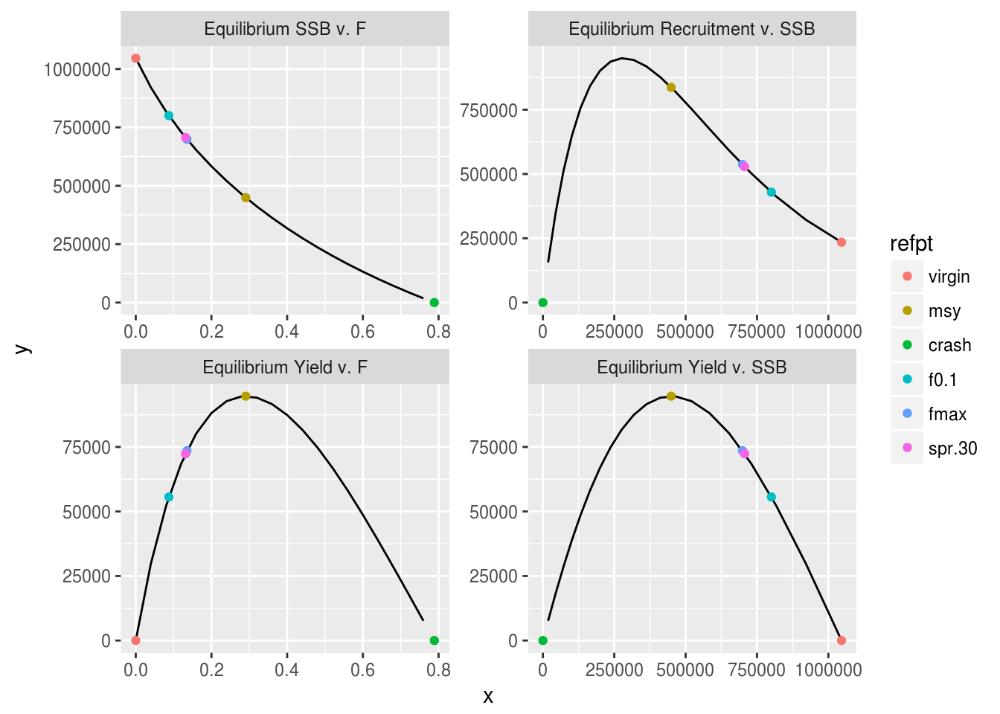
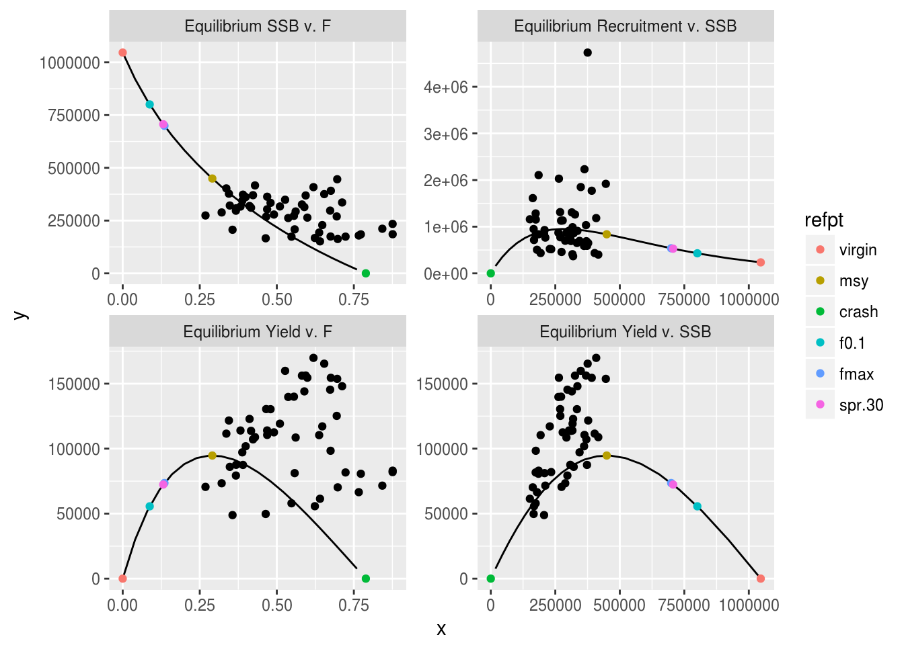
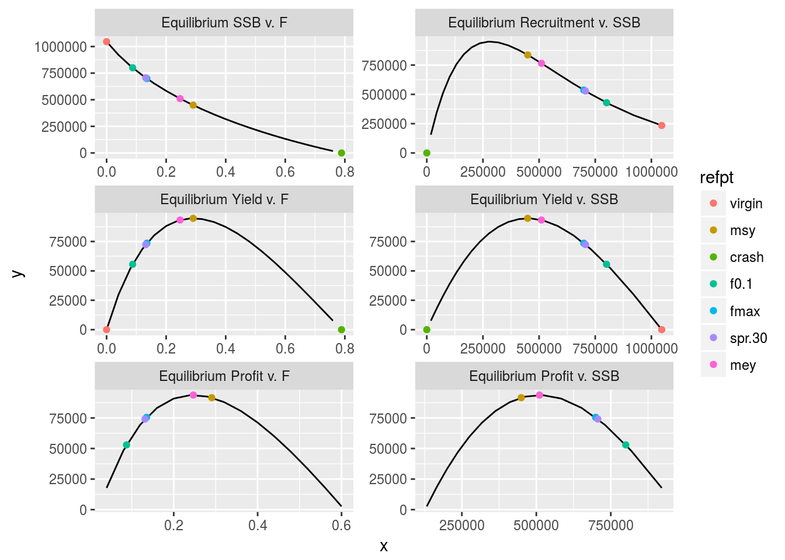
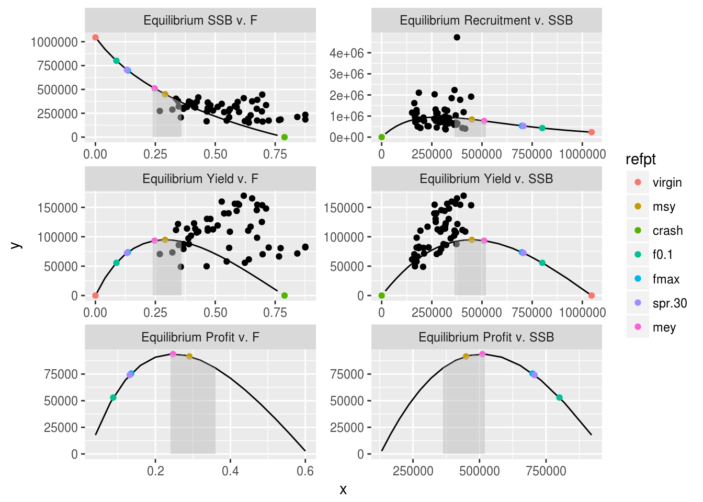

Reference points are important elements of fisheries management and the supporting scientific advisory frameworks. The World Summit on Sustainable Development (WSSD 2002) committed signatories to maintain or restore stocks to levels that can produce the maximum sustainable yield (MSY) by 2015. In addition, the precautionary approach (FAO 1996) requires the use of limit and target reference points to constrain harvesting within safe biological limits so that the major sources of uncertainty are incorporated. Hauge, Nielsen, and Korsbrekke (2007) reviewed the use of reference points in ICES in the framework of precautionary approach.
These agreements have been included in a variety of management acts or policies. For instance, the US Magnuson Stevens Fishery Conservation and Management Act mandates precautionary management to attain optimum yield, and the Common Fisheries Policy (CFP; REGULATION (EU) No 1380/2013) states that the Union should improve the CFP by adapting exploitation rates so as to ensure that, within a reasonable time-frame, the exploitation of marine biological resources restores and maintains populations of harvested stocks above levels that can produce the maximum sustainable yield. The exploitation rates should be achieved by 2015 […] in any event no later than 2020.
For example, the Convention of the International Commission for the Conservation of Atlantic Tunas (ICCAT) states that The Commission may, on the basis of scientific evidence, make recommendations designed to maintain the populations of tuna and tuna-like fishes that may be taken in the Convention area at levels which will permit the maximum sustainable catch. In this and in many other cases, maximum sustainable catch is generally assumed to be synonymous with maximum sustainable yield (MSY). Management must also be consistent with international agreements relating to the Conservation and Management of Straddling and Highly Migratory Fish Stocks (Doulman 1995) and the Precautionary Approach (FAO 1996).
MSY has been criticised as not being a robust management objective since it may lead to unsustainable and/or less than optimal management because of uncertainties associated with interpretation of data and the simplifying assumptions made when modelling biological processes (Rosenberg and Restrepo 1994). The precautionary approach therefore includes the following recommendations i.e. to
Therefore important scientific tasks are to estimate reference points, evaluate the effect of uncertainty and use them to provide management advice.
The types of questions that fisheries scientists have to answer for managers are commonly of the type * is fishing mortality too high and unsustainable in the long-term? * is biomass too low and has the stock collapsed?
Biological reference points are important in answering these sorts of question as they are benchmarks against which stock assessment estimates can be compared and allow advice to be given about the current status of a stock, sustainable level of fishing effort and potential future catches.
Halliday, Fanning, and Mohn (2001) defined four main characteristics of stocks i.e. production, abundance, exploitation rate and ecosystem/environment effects. Reference points or indicators are commonly used to assess the status of stocks relative to these characteristics and there are four main types based either upon spawner per recruit, biomass, exploitation rate or size distribution. Quantities based on spatial distributions have also been proposed but to date have not been well developed. Here we consider reference points that are typically calculated from an age based analytical assessments. However reference points can also be calculated from biomass based assessments, surveys and a consideration of life history parameters alone.
In the case of ICCAT this can be interpreted as maintaining the stocks at a biomass level greater than BMSY, achievable amongst other means by ensuring that the fishing mortality level is less than FMSY
To follow this tutorial you should have installed the following packages:
if you are using Windows, please use 32-bit R version
You can do so as follows,
install.packages(c("ggplot2"))
install.packages(c("ggplotFL"), repos="http://flr-project.org/R")
install.packages(c("FLBRP"), repos="http://flr-project.org/R")# This chunk loads all necessary packages, trims pkg messages
library(FLCore)
library(ggplotFL)This example session intends to demonstrate the main features of the FLBRP package, and the FLBRP class and its methods. First of all, the package needs to be loaded
library(FLBRP)A new object of class FLBRP might be created from an FLStock object
data(ple4)
brp4 <- FLBRP(ple4)in which case the necessary input slots will be created accordingly, from those slots related to catch, landings, discards, and stock numbers and weights. All slots named *.obs will contain the related time series present in the original FLStock object, while other slots will contain averages across the year dimension over the last n years, where n is controlled by these three arguments: biol.nyears, fbar.nyears and sel.nyears, as detailed in the help page for FLBRP.
summary(brp4)An object of class "FLBRP"
Name:
Description:
Quant: age
Dims: age year unit season area iter
10 101 1 1 1 1
Range: min max pgroup minfbar maxfbar
1 10 10 2 6
fbar : [ 1 101 1 1 1 1 ], units = f
fbar.obs : [ 1 52 1 1 1 1 ], units = f
landings.obs : [ 1 52 1 1 1 1 ], units = t
discards.obs : [ 1 52 1 1 1 1 ], units = t
rec.obs : [ 1 52 1 1 1 1 ], units = 10^3
ssb.obs : [ 1 52 1 1 1 1 ], units = t
stock.obs : [ 1 52 1 1 1 1 ], units = t
profit.obs : [ 1 52 1 1 1 1 ], units = NA
landings.sel : [ 10 1 1 1 1 1 ], units = NA
discards.sel : [ 10 1 1 1 1 1 ], units = NA
bycatch.harv : [ 10 1 1 1 1 1 ], units = f
stock.wt : [ 10 1 1 1 1 1 ], units = kg
landings.wt : [ 10 1 1 1 1 1 ], units = kg
discards.wt : [ 10 1 1 1 1 1 ], units = kg
bycatch.wt : [ 10 1 1 1 1 1 ], units = NA
m : [ 10 1 1 1 1 1 ], units = m
mat : [ 10 1 1 1 1 1 ], units =
harvest.spwn : [ 10 1 1 1 1 1 ], units =
m.spwn : [ 10 1 1 1 1 1 ], units =
availability : [ 10 1 1 1 1 1 ], units = NA
price : [ 10 1 1 1 1 1 ], units = NA
vcost : [ 1 1 1 1 1 1 ], units = NA
fcost : [ 1 1 1 1 1 1 ], units = NA The fbar slot contains an FLQuant with the values of fishing mortality (F) used in the calculations of reference points. A default vector of seq(0, 4, by=0.04) is used
fbar(brp4)An object of class "FLQuant"
, , unit = unique, season = all, area = unique
year
age 1 2 3 4 5
all 0.00 0.04 0.08 0.12 0.16
[ ... 91 years]
year
age 97 98 99 100 101
all 3.84 3.88 3.92 3.96 4.00A stock-recruitment relationship can also be provided, either as an object of class FLSR, or through the model and params arguments, of class formula and FLPar respectively. The default model, if none is given, is that of mean recruitment with a value of a=1, useful for obtaining pre-recruit values.
model(brp4)rec ~ a
<environment: 0xc088a80>params(brp4)An object of class "FLPar"
params
a
1
units: NA Alternatively, a SR model can be provided (see the tutorial on modelling stock recruitment with FLSR. For example, a Ricker stock-recruitment relationship for the ple4 stock object could be specified. The FLSR object is first created and then fitted, after re-scaling the input values to help the optimizer. The parameter values are then scaled back and used to construct an FLBRP object where the Ricker model is to be used in the calculations
ple4SR <- transform(as.FLSR(ple4, model=ricker), ssb=ssb/100, rec=rec/100)
ple4SR <- fmle(ple4SR,control=list(silent=T))
params(ple4SR)['b',] <- params(ple4SR)['b',] / 100
ple4SR <- transform(ple4SR, ssb=ssb*100, rec=rec*100)
brp4Ri <- FLBRP(ple4, sr=ple4SR)The process for calculating biological and economic reference points using the FLBRP class can now proceed. A first call to brp() will calculate the default reference points and return an object of class FLBRP where the results have been added to the refpts slot.
The default reference points include the virgin stock, the MSY level, the crash exploitation, the approximation of MSY \(F_{0.1}\), \(F_{max}\) and \(SPR_{3O}\).
brp4Ri <- brp(brp4Ri)
refpts(brp4Ri)An object of class "FLPar"
quantity
refpt harvest yield rec ssb biomass revenue
virgin 0.0000e+00 0.0000e+00 2.3474e+05 1.0462e+06 1.0902e+06 NA
msy 2.9073e-01 9.4691e+04 8.3686e+05 4.4930e+05 5.7356e+05 NA
crash 7.8888e-01 2.1098e-06 4.5263e-05 4.9400e-06 9.9043e-06 NA
f0.1 8.7602e-02 5.5622e+04 4.2924e+05 8.0045e+05 8.7512e+05 NA
fmax 1.3538e-01 7.3551e+04 5.3700e+05 6.9910e+05 7.8893e+05 NA
spr.30 1.3157e-01 7.2368e+04 5.2850e+05 7.0662e+05 7.9529e+05 NA
mey NA NA NA NA NA NA
quantity
refpt cost profit
virgin NA NA
msy NA NA
crash NA NA
f0.1 NA NA
fmax NA NA
spr.30 NA NA
mey NA NA
units: NA In this case no information on prices (price), variable costs (vcost) and fixed costs (fcost) were provided, so the calculation of economic reference points was not possible. We will see later how to add that information, not present in an FLStock object.
Standard plots are available in FLBRP. The basic plots include the relationships between SSB and F, recruitment and F, yield and F and Yield and SSB at equilibrium. The different reference points are shown on each curve.
plot(brp4Ri)
Observations can easily be added to those plots
plot(brp4Ri,obs=T)
We can add economic data to the FLBRP object in order to calculate the maximum economic yield MEY. To do this, three variables are needed, price (at age) in keuro/ton of fish, variable costs in keuro per unit of fishing mortality F and fixed costs in keuro per unit of fishing mortality F. In this example, costs linked to the catch of plaice only are made up (because plaice is caught in mixed fisheries).
# price of fish at age
price(brp4Ri) <- c(rep(1.19,3),rep(1.34,2),rep(1.57,5))
price(brp4Ri)@units <- "keuro/ton"
# variable costs per F
vcost(brp4Ri) <- 62000
vcost(brp4Ri)@units <- "keuro/unit F"
# variable costs per F
fcost(brp4Ri) <- 25000
fcost(brp4Ri)@units <- "keuro/unit F"The reference points can be calculated again
brp4Eco <- brp(brp4Ri)
refpts(brp4Eco)An object of class "FLPar"
quantity
refpt harvest yield rec ssb biomass
virgin 0.0000e+00 0.0000e+00 2.3474e+05 1.0462e+06 1.0902e+06
msy 2.9073e-01 9.4691e+04 8.3686e+05 4.4930e+05 5.7356e+05
crash 7.8888e-01 2.1098e-06 4.5263e-05 4.9400e-06 9.9043e-06
f0.1 8.7602e-02 5.5622e+04 4.2924e+05 8.0045e+05 8.7512e+05
fmax 1.3538e-01 7.3551e+04 5.3700e+05 6.9910e+05 7.8893e+05
spr.30 1.3157e-01 7.2368e+04 5.2850e+05 7.0662e+05 7.9529e+05
mey 2.4689e-01 9.3259e+04 7.6520e+05 5.1064e+05 6.2799e+05
quantity
refpt revenue cost profit
virgin 0.0000e+00 2.5000e+04 -2.5000e+04
msy 1.3459e+05 4.3026e+04 9.1567e+04
crash 2.7308e-06 7.3911e+04 -7.3911e+04
f0.1 8.3400e+04 3.0431e+04 5.2969e+04
fmax 1.0889e+05 3.3394e+04 7.5500e+04
spr.30 1.0725e+05 3.3157e+04 7.4094e+04
mey 1.3405e+05 4.0307e+04 9.3740e+04
units: NA and plotted
plot(brp4Eco)
On this figure we see that \(F_{MEY}\) is lower than \(F_{MSY}\), meaning that the economic reference point is more sustainable than MSY. In rare cases when the price of smaller fish is higher than the price of older fish, \(F_{MEY}\) can be higher than \(F_{MSY}\).
Because of the uncertainty around the MSY estimates, Hilborn (2010) introduced the concept of pretty good yield corresponding to at least 80% of the theoretical MSY. The range of Fs leading to the pretty good yield can be considered a confidence interval around the estimated \(F_{MSY}\). The advantage of using the pretty good yield compared to the MSY point estimates is that it is less sensitive to population’s basic life history parameters. The concept of pretty good yield has been applied to European fisheries using a 95% range (Rindorf et al. 2016). The resulting F ranges could then be used in mixed fisheries management plans in an effort to reconcile the TACs of species caught together with the level of exploitation by the fleets (STECF 2015).
Below is an example of calculating the pretty good yield at 95% of MSY.
(rge4 <- msyRange(brp4Eco,range=0.05))An object of class "FLPar"
quantity
refpt harvest yield rec ssb biomass revenue
msy 2.9073e-01 9.4691e+04 8.3686e+05 4.4930e+05 5.7356e+05 1.3459e+05
min 2.1289e-01 8.9957e+04 7.0126e+05 5.6255e+05 6.7291e+05 1.3046e+05
max 3.7743e-01 8.9957e+04 9.3140e+05 3.4290e+05 4.7299e+05 1.2523e+05
quantity
refpt cost profit
msy 4.3026e+04 9.1567e+04
min 3.8199e+04 9.2258e+04
max 4.8401e+04 7.6826e+04
units: NA The F and SSB ranges calculated can also be added to the plots
p <- plot(brp4Eco,obs=T)
p$data <- within(p$data,{minrge <- NA
minrge <- replace(minrge,grep("v. F",pnl),rge4@.Data["min","harvest",])
minrge <- replace(minrge,grep("v. SSB",pnl),rge4@.Data["max","ssb",])
maxrge <- NA
maxrge <- replace(maxrge,grep("v. F",pnl),rge4@.Data["max","harvest",])
maxrge <- replace(maxrge,grep("v. SSB",pnl),rge4@.Data["min","ssb",])})
p+ geom_area(aes(x = ifelse(x>=minrge & x<=maxrge , x, NA),y=y,group=iter),fill="grey",alpha=0.5) 
\(F_{Crash}\) is the level of F that will drive the stock to extinction.
\(F_{0.1}\) is a proxy for \(F_{MSY}\) and is the fishing mortality that corresponds to a point on the yield per recruit curve where the slope is 10% of that at the origin.
\(F_{Max}\) is F returning the maximum yield per recruit.
\(MEY\) represents the maximum economic yield, \(F_{MEY}\) corresponds to the level of exploitation that provides the maximum profit. Profit is obtained as the difference between the revenue (yield multiplied by prices) and the costs (cost per unit of F multiplied by the level of exploitation).
\(MSY\) represents the maximum sustainable yield, \(F_{MSY}\) corresponds to the level of exploitation that provides the maximum yield, derived from a spawner and yield curves combined with a stock recruitment relationship.
\(SPR_O\) is the spawner per recruit at virgin biomass.
\(SPR_{30}\) corresponds to the point on the curve where SPR is 30% of \(SPR_0\). In these cases the biomass, ssb and yield values are derived by multiplying the per recruit values by the average recruitment.
virgin represents the virgin biomass without exploitation.
This document is licensed under the Creative Commons Attribution-ShareAlike 4.0 International license.
FAO. 1996. “The Precautionary Appraoch to Fisheries and Its Implications for Fishery Research, Technology and Management: An Updated Review.”
Halliday, R. G., L.P Fanning, and N.K Mohn. 2001. “Use of the Traffic Light Method in Fishery Management Planning.” Canadian Science Advisory Secretaria 2001/108.
Hauge, Kjellrun Hiis, Kare Nolde Nielsen, and Knut Korsbrekke. 2007. “Limits to Transparency Exploring Conceptual and Operational Aspects of the Ices Framework for Providing Precautionary Fisheries Management Advice 10.1093/Icesjms/Fsm058.” ICES J. Mar. Sci. 64 (4): 738–43.
Hilborn, Ray. 2010. “Pretty Good Yield and Exploited Fishes.” Marine Policy 34 (1): 193–96. doi:http://dx.doi.org/10.1016/j.marpol.2009.04.013.
Rindorf, Anna, Massimiliano Cardinale, Samuel Shephard, José A. A. De Oliveira, Einar Hjorleifsson, Alexander Kempf, Anna Luzenczyk, et al. 2016. “Fishing for Msy: Using ‘Pretty Good Yield’ Ranges Without Impairing Recruitment.” ICES J. Mar. Sci. doi:10.1093/icesjms/fsw111.
Rosenberg, Andrew A., and Victor R. Restrepo. 1994. “Uncertainty and Risk Evaluation in Stock Assessment Advice for U.S. Marine Fisheries.” Can. J. Fish. Aquat. Sci. 51: 2715.
STECF. 2015. “Evaluation of Management Plans: Evaluation of the Multi-Annual Plan for the North Sea Demersal Stocks (Stecf-15-04).” Publications Office of the European Union.
WSSD. 2002. “Report of the World Summit on Sustainable Development.”